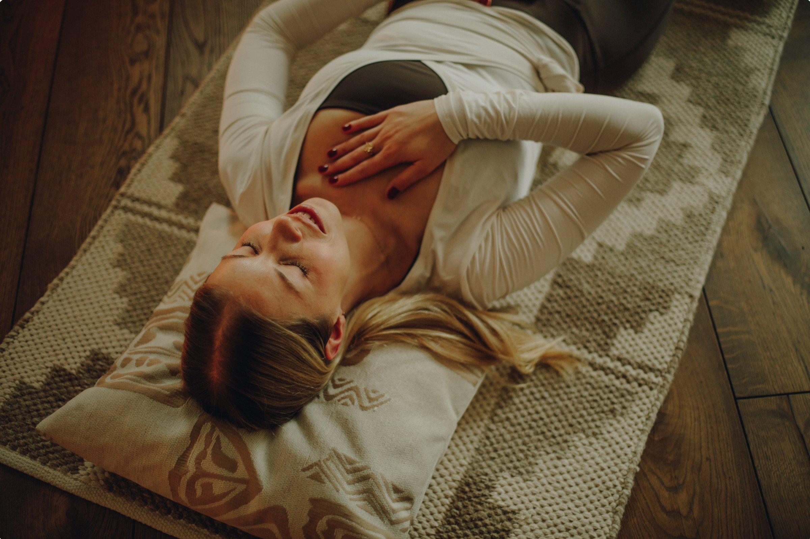
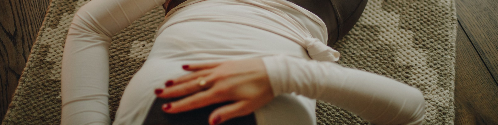

Good decisions come from a regulated body
Personalized wellness advisory rooted in traditional Tibetan medicine
My practice sits at the intersection of Tibetan medicine, nervous system regulation, and two decades of pattern recognition across health, design, and human behaviour.
Stress, decision-making and how we experience life are closely connected to how we eat, sleep, move and live. The body is either supporting your life or quietly working against it. Usually the answer is in the details most people overlook.
I work with a small number of clients globally. Sessions are deep, direct, and followed by a written action plan built specifically for you.
If something here resonates — it probably should.
This service provides educational and wellness-oriented guidance. It is not medical or psychological care and does not diagnose, treat or prevent medical or mental health conditions. It does not replace consultation with a qualified healthcare professional.
The holiday gift

A gift that lasts long after the holidays
This season, give someone you love more than another thing to unwrap. A private session offers time, full attention and a written plan built entirely around them — something they can return to all year.
For the friend who carries everyone else, the parent who never slows down, or the partner who keeps saying “I’m fine”.
This may be you
You’re running on stress
Anxiety, tension, and a low-level feeling that something is off. Even when life looks fine from the outside.
Your body isn’t keeping up
Sleep, digestion, and energy are telling you something. You’ve noticed, but haven’t found the root of it yet.
You’ve lost your sense of self
A flatness, a disconnection from your own motivation and aliveness. You know this isn’t who you truly are.
Most people focus on managing symptoms. We look at the patterns, habits and circumstances that may be influencing how you feel.
A Session Built Around You
A private, 90-minute consultation exploring your nutrition, lifestyle, nervous system, and individual patterns through the perspective of Tibetan medicine and modern health knowledge.
You’ll leave with a deeper understanding of your wellbeing and a personalized written plan with practical recommendations.
How we work
We look at the full picture
Before we meet, you’ll complete an intake covering your health, lifestyle, patterns, symptoms, and what has brought you here. This helps us identify what matters most and where your energy should go first.
We uncover the root patterns
During our 90-minute session, we’ll explore the connections between your symptoms, habits, environment, nervous system, relationships, and daily life.
You leave with a clear path forward
Following the session, you’ll receive a personalised action plan with specific priorities, recommendations, and practical next steps. The goal is not more information, but meaningful change that can be implemented in real life.
If something here resonates — it probably should.
Book a session
Areas of impact
Health is rarely shaped by one factor alone. We explore the different aspects of your life and how they influence one another.
Nutrition
What you eat, how you eat and how it relates to your overall wellbeing.
Lifestyle
Daily patterns, environment, movement, social interactions and how you structure your time.
Nervous System
Understanding the physical, nutritional and emotional factors that influence your nervous system and how it responds to stress.
Digestion
Digestive patterns, food sensitivities and how your body responds to what you eat.
Sleep
Sleep quality, patterns and factors that may interfere with rest.
Emotions
Emotional patterns, experiences and how they interact with your physical wellbeing.
Exercise
Your physical activity, strength, mobility and movement patterns, with attention to your body’s individual needs and limitations.
Health History
Your health history, existing conditions, medications and supplements are considered when developing personalised recommendations.
Book a Session
Explore how a personal consultation can help you better understand your health, identify underlying patterns, and make meaningful changes to your wellbeing.

The session
We go deep into what’s actually happening — your body, your patterns, your life as it is now. I listen through the lens of Tibetan medicine, which reads the body as a whole system, where nutrition, lifestyle, sleep, environment, and inner state are never separate questions. Combined with nervous system regulation, this provides a broader perspective on the patterns and factors that may be influencing your wellbeing.
Afterwards you receive a written guidance with specific actions, priorities, and guidance built entirely around you and what came up in the session. Nothing generic. Everything actionable.
The offers
Initial Session
€260 • 90 minutes
A comprehensive consultation to understand what is happening beneath the surface, identify patterns and explore the factors influencing your current state.
You leave with an individualised perspective, practical recommendations and a considered direction for moving forward.
Follow-Up Session
€90 • 30 minutes
A one-time opportunity to revisit your initial consultation, discuss your progress, reflect on changes and address any questions that have emerged along the way.
Designed to help you integrate the recommendations into everyday life and adjust your approach where needed.
Typically scheduled 4–6 months after the initial consultation, or whenever you feel ready to revisit the conversation.
Further Sessions
€190 • 90 minutes
For returning clients who want to explore something further, navigate a significant transition or work through persistent patterns.
An opportunity to look more deeply at what is changing, gain a fresh perspective and receive individual guidance as you move forward.
Each session responds to where you are now, what you are experiencing and what needs your attention.
One session is designed to be complete in itself — a full picture of what’s happening and what to do about it. Some people return to go deeper. But that’s a choice, never an assumption.
What’s in your plan
Dietary adjustments, do’s & dont’s
Personalised dietary recommendations informed by your constitution, digestion, health history and individual needs. Practical guidance on food choices, eating habits and dietary adjustments to consider.
Lifestyle, rest & recovery
Recommendations for your daily routines, sleep, work-life balance and recovery habits. Practical adjustments that take your circumstances, energy and lifestyle into account.
At-home practices & supportive therapies
Suggestions for supportive approaches such as massage, heat therapies and simple practices you can incorporate into your daily routine, where appropriate.
Nervous system exercises & meditations
Breathing techniques, meditation and practical exercises to explore stress responses, develop emotional awareness and support relaxation and self-regulation.
Physical exercises & body conditioning
Personalised suggestions for strength, mobility, stretching and body awareness. Exercises selected with consideration for your physical condition, individual needs and limitations.
Book a Session
Explore how a personalised consultation can help you better understand your health and lifestyle patterns, consider contributing factors and develop practical recommendations for your wellbeing.
Your recommendations are tailored to your individual needs and made to fit your current lifestyle.
“I was surprised how thorough the consultation was. The recommendations are very detailed, the therapist is caring and the experience feels safe.”
“I felt very comfortable in the session and felt surprisingly open sharing my story with the therapist. Her knowledge and awareness created a trusted atmosphere and time went by flying.”
“I would recommend Liis’s therapies to anyone who wants to take better care of themselves. Liis tunes in to your needs and guides you based on your body’s condition, helping to find the best solutions for your well-being. A truly valuable experience.”
How it’s different
Ancient wisdom, modern understanding
Tibetan medicine reads the body as a whole system. Nutrition, sleep, environment, emotions, and nervous system state are never treated separately. Combined with modern science, this gives a depth that most approaches simply don’t reach.
Lasting value already in one session
This is not another 12-week program. The goal is to give you an actionable picture of what’s happening and what to do about it in a single meeting. Whether you return after is entirely your choice.
Deep listening with practical guidance
The session has structure and depth, but no agenda imposed on you. The guidance emerges from genuine listening, not a pre-set framework. Clients describe it as feeling truly heard while walking away with specific, practical steps to follow.
The story
I moved from Estonia to New York in my twenties to work in tech — fast-growing startups, accelerators, the kind of environment that teaches you a lot about performance and almost nothing about its long-term cost. That eventually led me to building my own design firm working with brands on creative direction and strategy.
While in New York I enrolled in a professional dance school and trained rigorously for four years straight — technique, discipline, learning what it actually means to inhabit a body with full attention. You learn quickly what balance feels like, and what it feels like when it’s gone.
In parallel I built a daily meditation and mindfulness practice, not as a habit but as a necessity. I did the psychological work, faced my own nervous system imbalance, and learned what it takes to genuinely come back to myself. I know this territory from the inside.
A lifelong passion about nutrition eventually led me to Tibetan medicine. Through my practice, I’ve worked with clients on nutrition, lifestyle, physical wellbeing and nervous system regulation. My approach combines individual attention, traditional knowledge and practical recommendations.
This practice is the natural meeting point of the above.
I’m based in Tallinn. I work with clients globally.
Looking for a meaningful holiday gift?
Give a loved one a session built entirely around them — time, attention and a personal plan for their wellbeing.